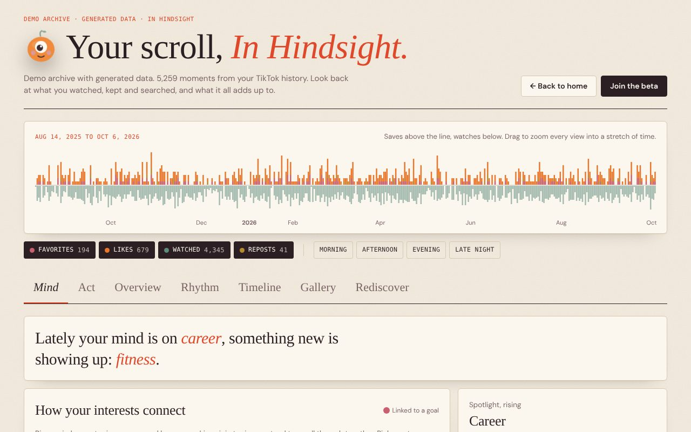
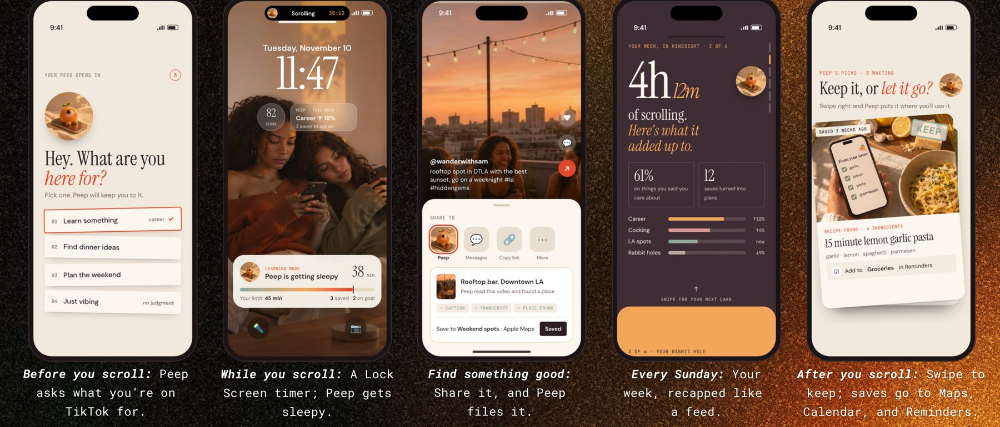

In Hindsight · Oct 2026 to now
You Saved It. Now Use It
A TikTok user who feels guilty about how long they scroll needs to get something out of what they save, but their saves disappear into folders they never open.
How It Went
-
Oct 2026Research
The Idea
My saves were a graveyard. I wanted to see them as something other than a folder.

-
Oct 2026Tech
A Dashboard of My Scroll
Upload your TikTok export and see your scrolling as a timeline, topics and rhythm. It all runs in your browser.

-
Nov 2026Research
Asking People
35 surveys and 5 interviews, mostly USC students. Seeing your habits wasn't enough. People wanted their saves to do something.
94%gave up finding a save54%never rewatch66%have 200+ saves -
Nov 2026Design
Saves to Action
Recipes, places and plans sent to Maps, Calendar and Reminders.

-
Nov 2026Design
Meet Peep
A buddy, not a blocker. Peep asks what you're on TikTok for, gets sleepy when you scroll too long, and files what you find.

-
Nov 2026Business
Free, Then $4 a Month
63% of people I surveyed would pay or consider it. 11 people joined the waitlist in one day.

Looking Back
- What worked
- Asking people. The survey changed the product more than any feature.
- What I'd do differently
- I built the dashboard before talking to anyone. I'd flip that.
- What's next
- A 100-person private beta in January, then Peep on iOS in the spring.